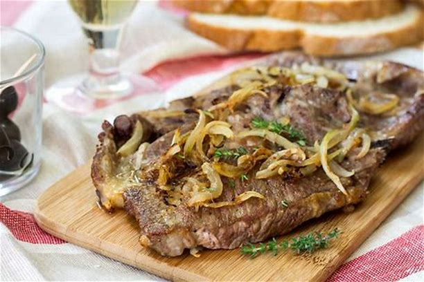

Bife Acebolado
Confira como fazer bife acebolado suculento: você vai precisar apenas de 4 ingredientes para preparar essa receita ótima para o almoço ou jantar da semana. Você pode utilizar a carne de sua preferência, como alcatra ou contrafilé
Confira como fazer bife acebolado suculento: você vai precisar apenas de 4 ingredientes para preparar essa receita ótima para o almoço ou jantar da semana. Você pode utilizar a carne de sua preferência, como alcatra ou contrafilé